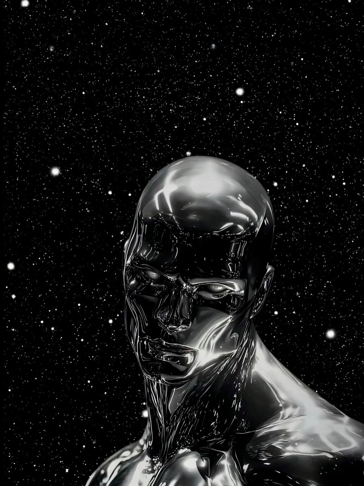

Silver Surfer
Silver Surfer, originally Norrin Radd of the peaceful planet Zenn-La, is one of Marvel's most powerful and tragic cosmic heroes. Created by Stan Lee and Jack Kirby, he sacrificed his freedom to become the Herald of Galactus in order to save his home world from destruction.
Transformed by the Power Cosmic, he gained extraordinary abilities including faster-than-light travel, energy manipulation, superhuman strength, and near invulnerability, traveling the universe on his iconic silver surfboard. Though immensely powerful, the Surfer is deeply philosophical and often struggles with guilt and loneliness, especially after rebelling against Galactus to protect Earth.
His stories blend cosmic-scale action with themes of sacrifice, morality, and redemption, making him one of Marvel's most introspective characters.